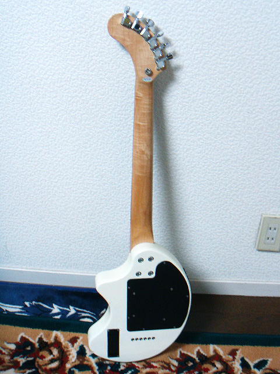
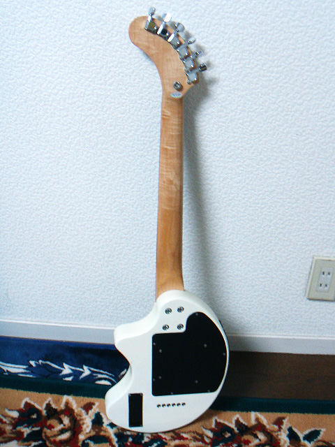

- 父
-
- 弟1
-
- 弟2
-
父 ： Aria Pro II MK-1800WA - Natural

- 購入日 ： 1980年頃
- 購入価格 ： 約80,000円
- 生産時期 ： 1979～1980年頃
- 指板・フレット数 ： エボニー・24F
父が高校に入ったとき友人から8万円で譲り受けたという、Aria Pro II によるモッキンバードのコピーモデル (それまで父はジェフベックに憧れて、Greco のストラトを使っていた)。モッキンバードは元々 B.C. Rich のモデルだが、当時は Aria Pro II や Greco、Fernandes などがこぞってコピーしていた。
このギターを購入してからは、父はこのギター1本をずっと使っていた。2000年頃にリフレットを行った際、ボリュームとトーン以外のスイッチを全て切ってしまい、沢山付いているスイッチ類は現在作動しない。もったいない…。
父もこのギターをとても大切に使ってきているのだが、肝心なスペックなどには全く関心がなかったのようで詳しいことは何も知らなかった。そこで、気になった僕はこのギターについて調べてみた。
- このモッキンバードのコピーモデル、MK シリーズは1977～1981年頃まで販売していた様子。1978年のカタログが見つかっている他、1977年のカタログにも掲載されている様子。ただし海外版 Wikipedia には製造期間は1978～1979年と書かれている。父がこのギターを入手した高校時代というと1980年頃なので、当時の新品を譲り受けたようだ。
- MK シリーズは4モデル展開されており、ボディがウォルナット材で PU が Aria Extra-III のものが MK-1500WA、PU に Dimarzio Dual Sound を搭載しているものが MK-1800WA。また、ボディ材がメイプルで Aria Extra-III が搭載されている MK-1300N、Dimarzio Dual Sound が搭載されている MK-1600N もある (メイプルなので色は肌色に近いモノ)。
- 上述の4つのモデルともスルーネックで、指板はエボニー、ペグは Grover Imperial 150C、ブリッジはバダス。専用ハードケース付きで販売されていた。製造はマツモク工業株式会社。型番が価格を表しており、MK-1800WA なら18万円、MK-1600N なら16万円、といった形。当時としてはかなり高価なギターだ。
- Aria Extra-III と Dimarzio Dual Sound、両者の PU の見分け方は、6弦側のポールピースの外側に小さな穴が開いているものが Dimarzio Dual Sound で、穴が開いていないものはアリア純正の Aria Extra-III であるとのこと。
- 茶色いウォルナット材のボディカラーから MK-1500WA か MK-1800WA のどちらかであることは分かっていたが、このギターの PU の左端には小さな穴が開いていたので、MK-1500WA ではなく Dimarzio Dual Sound が搭載された MK-1800WA と判明した。
- この個体のシリアルナンバーは 004006。以前楽器店のウェブサイトで同型の中古を発見し見てみたところ、そちらのシリアルナンバーは 010012 で1980年製だったので、父のギターは恐らく1978～1980年初め頃までに製造されたものであろう。
- 沢山付いているスイッチ類の機能は本家のものと同じ。3つのツマミはマスターボリューム、ブースターボリューム、マスタートーン。PU セレクターとバリトーンスイッチ (6接点) の間にあるミニスイッチがブースターの On / Off ミニスイッチ。ボディ下部の2つのミニスイッチはデュアルサウンドスイッチとフェイズスイッチ。
- 80年後半あたりから、ボディ下部のミニスイッチが3つに増えている。フェイズスイッチが2つになったのだろうか？また、後述する参考ページなどを見ていると、81年製と思われる個体でも2連スイッチだったりするものもあり、いつ頃から3連スイッチになったのかはイマイチ不明…。
- デュアルサウンドスイッチは、今でいうコイルタップみたいなもので、ハムバッカーをシングルコイルにスイッチする。
- フェイズスイッチは、(恐らく PU セレクターがセンターの時のみ) フロントとリアの位相を変えるモノ。スイッチを上げて On にすると逆位相になり、低音がカットされた音になる。
- 父は当時8万円で友人から譲り受けたものの、その友人は約20万円で購入したとのこと。父の友人が発言した価格からも、MK-1800WA で間違いないようだ。
- 最近でもヤフオクや楽器屋で時たま見かけるが、5～10万円程度と、さほど価格が高騰していないモデルだ。以前はウェブ上にほとんど情報がなかったが、最近は型番や「Aria MK」などと検索するといくつかのページが出てくるようになった。
音に関しては「木が詰まっている！」という感じがする、若干モコモコしたような音だ。シャリシャリとした高音がどうやっても出ない。これがボディ材のせいなのかどうかは不明。しかしスルーネック構造によりサスティーンはよく伸びるので、ソロ向きといえる。逆にバッキングには音が太すぎて向いてない感じ。
僕が小さい頃、この父の大切なギターに、僕がポケモンのニョロモのシールを貼ってしまったことがあった。自分のギターを持つようになってよく分かったのだが、自分のギターを他人に触られるだけでも嫌だというのに、シールを貼っても怒らないでいてくれた父の愛情に感謝だ。その後リペアに出したときに剥がしたのであろう、ニョロモはいなくなった。現在は祖母の家 (父の実家) に置いてある。
以下は参考にしたページ、このギターを紹介しているページなどなど。
僕が人生で初めて触ったギターだったことで僕にも愛着があり、2012年9月14日、全く同じモデルを自分用に購入した。→ Aria Pro II MK-1800WA - Natural
Fernandes DIGI-ZO - Pearl White (売却済)
 

- 購入日 ： 2000年頃
- 購入価格 ： 約45,000円
- 生産時期 ： 1999～2000年頃
- 指板・フレット数 ： ローズウッド・22F
こちらも父のギター。2000年頃、父が仕事中に営業車でサボるときのために、と買ったミニギター。ギター本体にスピーカーが付いており、ギターのみで音が出る仕組み。
またもや父は自分が買ったギターに関する情報を知らなかったので調べてみた。
- ZO-3 というショートスケールでアンプ内蔵の可愛らしいギターのシリーズ。長らく型番が分からず、DIGI-ZO Hyper という型番かな？と思っていたが、このギターはカバードピックアップだから違うなぁと思いよく調べたところ、1999～2001年まで販売されていた DIGI-ZO であることが分かった。DIGI-ZO Hyper の先代機種だった。
- 色はパールホワイトのマッチングヘッド。1999年の発売当時は他にメタリックレッド、パールブルー、ピューター (灰色) があった。2000年後半にメタリックブラック、2001年にはマホガニーボディの WR と BR も登場した。全て価格は48,000円。
- 本体内蔵の24種類のエフェクトが9つまで同時使用でき、24個のセッティングが本体にそのまま保存できる。チューナー機能も付いており、本当にこの1台だけでサウンドクリエイトから演奏までできる。
ショートスケールながら22フレットまである実用的なギターなのだが、父はこれまで24フレットあるモッキンバード1本でやってきたために、22フレットまでしかないこのギターにあまり慣れず。しかしサボり用には最適なギターだったであろう。
以前、祖父の還暦のお祝いのプレゼントとして父がこのギターで祖父に生演奏を聴かせたのだが、その時子供だった僕は演奏している父の周りで従兄妹や弟たちと鬼ごっこをしてしまい、せっかくの父の生演奏が台無しになってしまった。このことが今になっても忘れられず、父に悪いことをしたなぁと思っている…。
僕は2004年頃から、このギターを借りてちまちまとお遊び程度にギターを弾いていた (1日5分ぐらい触って飽きる、という本当にお遊び程度…w)。2006年8月26日、初めて YouTube にアップした自分のギターの動画ではこれを使っていた。現在は誰も使用することなく、祖母の家 (父の実家) の部屋の隅でじっとしているが、僕にとっても思い出のあるギターだ。
以下は参考にしたページなど。
- Fernandes - Catalog より :
- 1999年のカタログより : Fernandes の30周年記念モデルだったようだ。この前年のカタログには掲載されていないこともあり、1999年が発売年のようだ。
- 2000年前半のカタログより : 内容は昨年のものとほぼ同じ。
- 2000年後半のカタログより : ブラックカラーが追加されている。
- 2000年 Voice のカタログより : DIZI-ZO のマホガニーボディ仕様の2モデルの紹介。
- 2001年前半のカタログより : マホガニーボディ仕様の2モデルが追加されている。同年の後半のカタログでは DIGI-ZO Hyper が登場しており、この DIZI-ZO は掲載されていない。
- 2001年後半のカタログより : 後継機種 DIGI-ZO Hyper では DigiTech のシグナルプロセッサーを採用し、メモリーも24個から40個まで増加していたりと進化している。値段も52,800円に上昇。
- ギター総研 Player On-Line 新製品アーカイブ - Jpg 直リンク。Player 1998年12月号に掲載されていた DIGI-ZO の解説。
DIGI-ZO MANIACS! (リンク切れ) - 1999年2月に購入したという同機種を改造している人のページ。ボディカラーは同じモノである。ギターショップ カエデ - 中古品 DIGI-ZO (リンク切れ) - 写真あり。中古品 (Sold Out)。同じ機種のモノである。
2017年、父が機材整理のために売却。
Burny RLC-45 - See Through Blue (売却済)
- 購入日 ： 2001年頃
- 購入価格 ： 約45,000円
- 生産時期 ： 不明 (2001年頃？)
- 指板・フレット数 ： ローズウッド・22F
Fernandes の姉妹ブランド Burny のレスポールカスタムモデルで、父が2001年頃に横浜のヤマハ楽器店にて約6万5千円購入したとのこと。僕がギターを本格的に始めた高校1年のときから3年間はこのギターを借りて、僕のメインギターとしていた。
またしても父はこのギターの詳細を知らずに購入していたので、調べてみた。
- 初め全く型番が分からず。Burny のレスポール・カスタムモデルは RLC というシリーズ名が付いているので色々探した。
- 父の記憶している購入金額とは異なるが、調べてみた結果、RLC-45 という型番のものに間違いないであろう。定価は4万5千円だった。
- シースルーブルー STB とシースルーレッド STR は2002年と2003年前半のカタログにのみ掲載されているので、短期間の販売だったようだ。ブラックとホワイトのレスカスはこの後も現在まで RLC シリーズで残っている。
- カタログスペックでは、マホガニーネック、メイプルトップ 15mm とマホガニーバック 45mm のボディ、指板はローズウッドで 400R、FVH-2002 なるピックアップが2つ搭載されている。
僕は高校でクラスメイトに誘われて軽音楽部に入ったことで本格的にギターを始めたのだが、そのとき自分のギターなど持っていなかったので、この父のギターを借りることになった。それ以来高校3年間、そして大学1年の初めまではこのギター1本で乗り切りった。そういえば高校のとき、同じ Burny RLC のブラックを持っている女の子がいたのだが、元気にしているだろうかw。
僕にとっては実質的にこれが初めてのギターなので、ギターを選ぶ際にはこのギターの音を基準に考えている。最近は祖母の家 (父の実家) に置いてありほとんど使っていないが、大切なギターだ。
参考にしたページなど。
父 ： Boss Effectors (処分済)
- 父の記憶が曖昧なため購入時期・生産時期等不明
- Boss CE-3 Chorus
- Boss CS-2 Compression Sustainer
- Boss DM-3 Delay
- Boss OC-2 Octaver
- Boss SD-1 Super Over Drive
ギターを始めてしばらくは、父が使っていたエフェクターを借りていた。父はそれまで様々なエフェクターを使っていたようだが、僕がギターを始めた頃に残っていたのは全て Boss のコンパクトだった。僕がギターを始めた2006年の年末に、一度ライブで CS-2 と SD-1 を使った。しかしそれ以降段々とノイズが酷くなり、接点も不良になってきたため、Boss ME-50 を購入してからは使っていなかった。
普段あまりこだわりがないまま機材を購入する父だが、唯一 CS-2 の3つのツマミ部分には、父が編み出した「ハウらなくて程よい効果が得られる黄金設定」になるツマミの位置にマジックで点が書いてあった。僕自身も色々試したが、結局この黄金設定で落ち着いた。コンプレッサーだけは新しい CS-3 ではなく、この CS-2 を買い直した。→ Boss CS-2
ちなみに、パッチケーブルは父はもう捨てていたため、僕が使う際は3メートル程度のシールドでエフェクター同士を繋いだりしていたw。いよいよダメになってきたのでまとめて処分。
父 ： Marshall VS65R
- 購入日 ： 1995～2000年頃
- 購入価格 ： 不明 (4～50,000円程度か)
- 生産時期 ： 不明
父が90年代後半に購入したアンプを僕の部屋に置いて使っている。それまで父が使っていた Yamaha のアンプのシールド差し込み口に、当時幼かった弟が BB 弾を詰めてしまい、それを知らなかった父がシールドを繋ごうとした際にジャック内部がぶっ壊れてしまったため、「壊れてしまったアンプの代わりとして仕方なく」このマーシャルアンプが購入された。
…というのは表向きの話で、父は最近このときのことについて「アンプが壊れてしまって悲しかったが、同時に『これで新しいアンプを買う口実ができたぜ…』と喜んだ」と漏らした。母にはこの事実を秘密にしている…w。
ギターと同じく、父はやはりこのアンプについても詳しいことは知らないまま購入したので、僕がネットで調べてみた。
- Valvestate というシリーズで現在は廃盤。1990年代後半までは普通に発売されていたようだ。出力は 65W。
- プリアンプ部は真空管 (ECC83 というものらしい) で、パワーアンプ部はトランジスタとのこと。
- 本体表はインプット、クリーンチャンネルのボリュームと3バンド EQ。トーンシフトスイッチ、オーバードライブとの切り替えスイッチ。オーバードライブチャンネルのゲイン、3バンド EQ、ボリューム。センドリターンで繋いだ外部機器との音量調整を行う Fx Mix、リバーブ。
- 本体裏にヘッドフォン出力ジャック、フットスイッチの入力ジャック、ループリターン、ループセンド、ラインアウトのジャックがある。
- クリーンとディストーションは付属のフットスイッチでも切り替え可能。
プリアンプ部は真空管だが、パワーアンプ部がトランジスタのため、比較的安く現在でも中古が売れていて利用者も多いようだ。
音はというと、まさにマーシャル。歪みが最高。あちこちのスタジオでもっと大きなマーシャルを使ってきたが、僕はコレにも音の不満を感じたことはない。真空管だろうとトランジスタだろうと、これはまさしくマーシャルサウンドだ。よくあるマーシャルのモデリングともやはり違う気がする。
余談だが、自宅のアンプがマーシャルだと、スタジオで他のギターさんと JC-120 の取り合いをしなくて済むという利点があるw。僕はこのマーシャルが最初のアンプなので好んでマーシャルを使うのだが、周りの人はマーシャルをあまり好んで使う人は少ないみたい。
父 : Roland Cube 20X
- 購入日 ： 2010年頃
- 購入価格 ： 約20,000円
- 生産時期 ： 不明 (新品購入・2006年12月頃発売)
2010年頃、いつの間にか父が買っていた 20W のアンプ。エフェクターが色々付いていたり、パワースクイーザーが付いていたりしてとても便利。
父 : Seiko SAT101
- 購入日 ： 2010年頃
- 購入価格 ： 約2,600円
- 生産時期 ： 不明 (新品購入・2009年7月頃発売)
2010年以降に購入したと思われるチューナー。Input と Output があって、繋ぎっぱなしにできる。
父 : Washburn X50VPRO - QTBL
- 購入日 ： 2011-05-13
- 購入価格 ： 約40,000円
- 生産時期 ： 不明
- 指板・フレット数 ： ローズウッド・24F
2011年3月11日の東北地方太平洋沖地震によって、イシバシ楽器横浜店は店頭販売していたほとんどのギターが棚から落下してしまったそうだ。それらのうち程度の良いものは調整した後で半額で売られることになり、2011年5月13日、父はその「チョイキズ特価」のギターを購入して帰ってきた。通常8万円程度のところ、チョイキズということで半額の4万円で購入。
高校時代から Aria Pro II の Mockingbird 1本でやってきた父にとって、約20年ぶりに購入したギターだった。乳は初のフロイドローズにご満悦で、シースルーブルーのボディも好みのようだ。
キズの程度は2枚目の写真が良く分かる。ボディ表面は見た感じキズがないが、裏面はけっこうキズが見える。それでもサウンドはセイモアダンカンの分離感のある音が出るし、アームも絶好調だ。
弟1 : Fernandes RJB-KS - Red Sunburst
- 購入日：2010-04-25
- 購入価格：25,000円
- 生産時期 ： 不明 (新品購入)
- 指板・フレット数：ローズウッド・20F
高校に入学し軽音楽部に入った弟がベースを始めるため御茶ノ水で購入したベース。フェルナンデスの中でも安いランクの、ごく普通のジャズベースタイプだが、レッドサンバーストというカラーはクロサワ楽器のオリジナルだ。
弟1 : Vox AmPlug Bass
- 購入日：2010-08-06
- 購入価格：約4,000円
- 生産時期 ： 不明 (新品購入)
自宅にベースアンプがなく、またマンションのためアンプがあっても大音量は出せず、困っていた弟に教えたのがこの Vox AmPlug シリーズ。ベースにコレを繋げば、ヘッドホンで音が聴けるシロモノ。コンプ・ブーストも付いていて、かなり良い音がするv。
弟1 : Roland Cube 20XL Bass
- 購入日：2011-02-01
- 購入価格：約20,000円
- 生産時期 ： 最初期 (新品購入・2011-01-29 発売)
長らくベースアンプがなかった我が家に、初のベース用アンプ。2011年2月当時、発売されたばかりのモノだった。COSM モデリングのエフェクター類が内蔵されている。チューナーやパワースクイーザーなど便利な機能も付いている。
弟1 : Seiko DM100S
- 購入日 ： 2011年頃
- 購入価格 ： 約3,500円
- 生産時期 ： 不明
デジタルメトロノーム。ベーシストにとってリズムキープは重要な要素…と思って買ったのかは知らないが、なんかあったw。
弟1 : Cort GB-75 - White Blonde
- 購入日 ： 2011-05-14
- 購入価格 ： 約30,000円
- 生産時期 ： 不明
- 指板・フレット数 ： ローズウッド・22F
元 T-Square の須藤満に憧れ、白い5弦ベースを欲しがっていた弟が2011年5月14日に購入した5弦ベース。アクティブタイプで、コイルタップやミッドブーストなどが付いている。それまでパッシブ4弦のジャズベースしか使ってこなかった弟はアクティブベースの音作りの幅広さに驚いていた。価格は3万円程度だった。
写真4枚目は左がこの Cort 5弦ベース、真ん中がそれまで使っていた Fernandes RJB-KS - Red Sunburst、右はこのベースの前日に父が購入した Washburn X50VPRO - QTBL。
弟2 : Casio LK-57
- 購入日 ： 2003年頃
- 購入価格 ： 約35,000円
- 生産時期 ： 不明 (2002年10月頃発売)
2003年だか2004年だかに何となく購入されたキーボード。僕もこれをいじくってちょっぴりピアノを練習していたw。その後本格的にピアノを始めた弟は「88鍵ないとダメだー」とほざき、Casio Privia PX-730BK を親に買わせることになるw。
弟2 : Casio Privia PX-730BK
- 購入日 ： 2010-03-20
- 購入価格 ： 約90,000円
- 生産時期 ： 不明
2010年3月中旬に購入、3月20日に我が家へ搬入されたデジタルピアノ。値段は詳しく聞かなかったものの、85000～90,000円程度のもの。これまでのキーボードとは違い88鍵あり、ペダル付きでありながら、以前のキーボードに付いていたようなレッスン機能も搭載している。
{kind=link}
{kind=link}
{kind=link}
{kind=link}
{kind=link}
{kind=link}
{kind=link}
{kind=link}
{kind=link}
{kind=link}
{kind=link}
{kind=link}
{kind=link}
{kind=link}
{kind=link}
{kind=link}
{kind=link}
{kind=link}
{kind=link}
{kind=link}
{kind=link}
{kind=link}
{kind=link}
{kind=link}
{kind=link}
{kind=link}
{kind=link}
{kind=link}